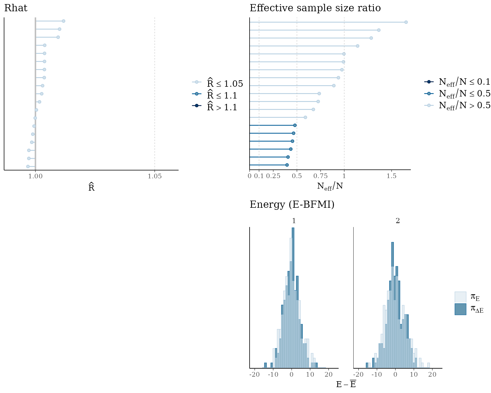
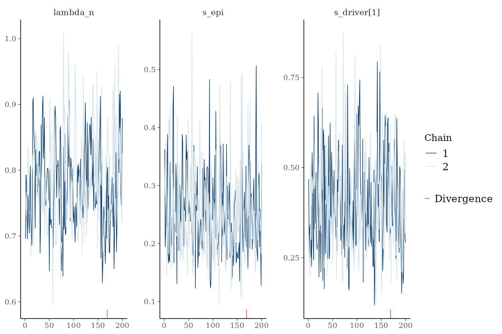
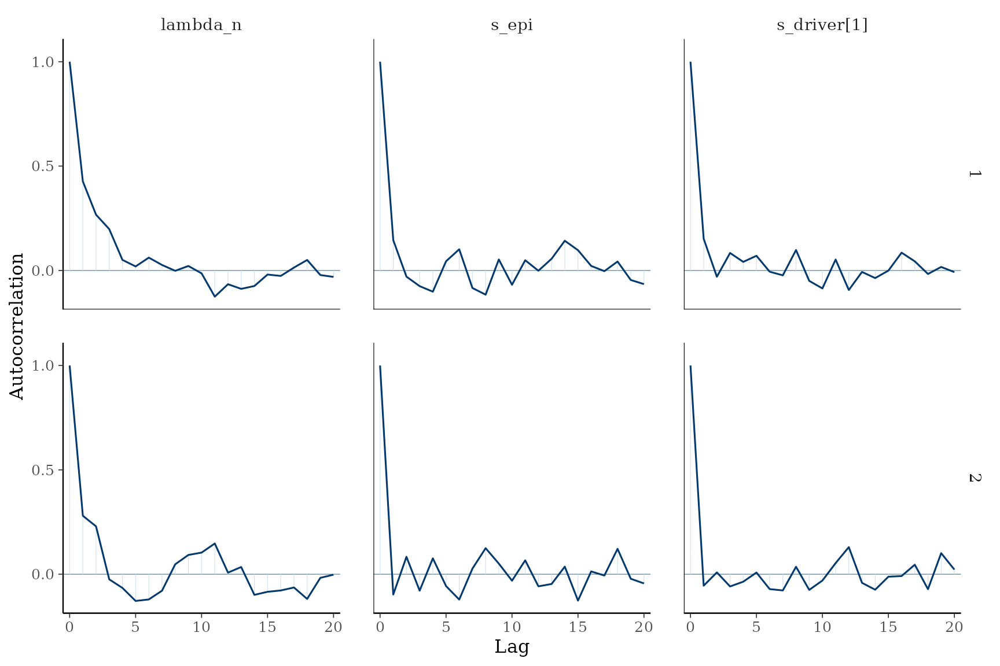
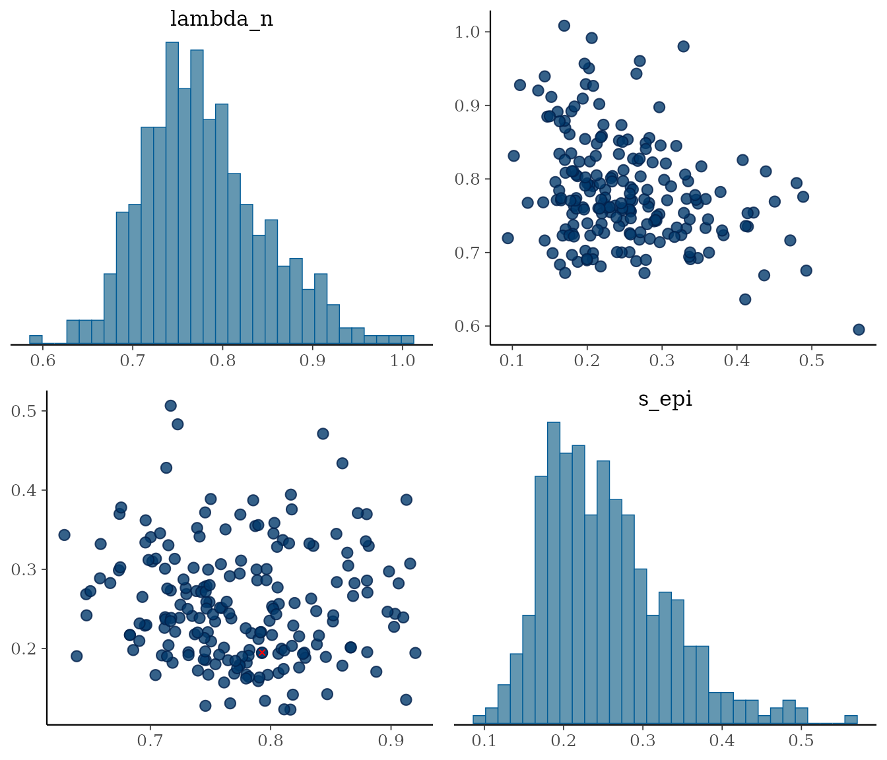
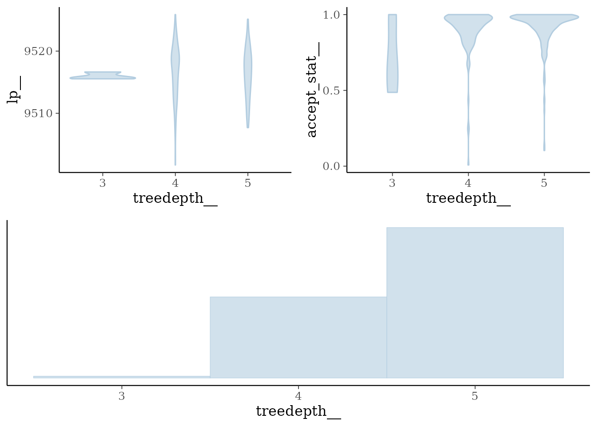

Convergence diagnostics
Source:vignettes/articles/Convergence_diagnostics.Rmd
Convergence_diagnostics.Rmd
library(PEPI)
library(cmdstanr)
#> This is cmdstanr version 0.8.0
#> - CmdStanR documentation and vignettes: mc-stan.org/cmdstanr
#> - CmdStan path: /home/runner/.cmdstan/cmdstan-2.39.0
#> - CmdStan version: 2.39.0
library(bayesplot)
#> This is bayesplot version 1.15.0
#> - Online documentation and vignettes at mc-stan.org/bayesplot
#> - bayesplot theme set to bayesplot::theme_default()
#> * Does _not_ affect other ggplot2 plots
#> * See ?bayesplot_theme_set for details on theme settingfit_multirates() defaults to
method = "variational" (ADVI), a fast approximation with no
notion of chains, R-hat, divergences or treedepth. Whenever you need to
trust a result - not just eyeball it - fit with
method = "sample" (full Hamiltonian Monte Carlo / NUTS)
instead, and use the diagnostics below to check the chains actually
converged. These are thin wrappers around bayesplot, which already knows
how to read a cmdstanr fit directly, so there is no
PEPI-specific plotting logic to learn.
Simulate data and fit with MCMC
Stan’s own sampler console output is suppressed below for readability - it normally includes informational messages about rejected initial values during warmup, which are expected and not a sign of a problem here.
set.seed(42)
sim = simulate_multirates_tree(
sampling_times = c(3, 6, 9),
tmrca = 1, t_min = 0,
lambda_n = 1, s_epi = 0.15,
omega_n_wt = 5e-3, omega_p_wt = 2e-3,
drivers = list(
list(id = "KRAS", t_driver = 2, s_driver = 0.3,
omega_n_driver = 5e-3, omega_p_driver = 2e-3,
ms_driver = -0.5, sigma_driver = 0.5,
alpha_n_driver = 1, beta_n_driver = 10,
alpha_p_driver = 1, beta_p_driver = 10)
),
clades_wt = list(
list(id = "c1", t_clade_wt = 1.5)
),
mu = 1e-7, l = 2.7e9, kappa = 20, sigma_count = 0.1,
seed = 42
)
x = init_multirates(sim$tables, m_trunk = sim$truth$m_trunk)
x = fit_multirates(x, cmdstan_path = cmdstanr::cmdstan_path(),
method = "sample", chains = 2, ndraws = 200, seed = 45,
mu = 1e-7, l = 2.7e9, t_min = 0, ms_epi = 0, sigma_epi = 0.5,
alpha_lambda = 1, beta_lambda = 1,
alpha_n_wt = 1, beta_n_wt = 10, alpha_p_wt = 1, beta_p_wt = 10,
min_kappa = 5, max_kappa = 200,
min_sigma_count = 0.01, max_sigma_count = 1)One-call dashboard
plot_diagnostics() arranges the four checks you should
look at first - R-hat, effective sample size, divergences and the HMC
energy diagnostic - into a single figure.
plot_diagnostics(x)
#> Warning: Groups with fewer than two datapoints have been dropped.
#> ℹ Set `drop = FALSE` to consider such groups for position adjustment purposes.
#> Groups with fewer than two datapoints have been dropped.
#> ℹ Set `drop = FALSE` to consider such groups for position adjustment purposes.
#> `stat_bin()` using `bins = 30`. Pick better value `binwidth`.
#> `stat_bin()` using `bins = 30`. Pick better value `binwidth`.
- R-hat (top left): the potential scale reduction factor, one point per parameter. Values close to 1 mean the chains agree with each other; anything above about 1.05 means they haven’t converged to the same distribution and you need more iterations (or the model is misspecified).
- Effective sample size ratio (top right): , one point per parameter. Low ratios mean the chain is highly autocorrelated - the raw draws contain less independent information than their count suggests.
- Divergences (bottom left): transitions the sampler had to abandon because the numerical integrator became unstable. Even a handful can bias posterior estimates in the region where they occur.
- Energy / E-BFMI (bottom right): the marginal energy distribution () should closely track the energy transition distribution (); a systematic mismatch signals inefficient exploration.
Digging deeper into individual diagnostics
Each panel above is also available on its own, and accepts a
params argument (Stan parameter base names, no brackets -
indexed parameters like s_driver are expanded to all of
their elements automatically) to zoom in on a specific subset.
plot_trace(x, params = c("lambda_n", "s_epi", "s_driver"))
Trace plots overlay each chain’s path through the parameter space over iterations; well-mixed chains look like “fuzzy caterpillars” with no trend and substantial overlap between chains.

Autocorrelation should decay quickly with lag; slow decay is the same problem the effective-sample-size panel flags, just visualised directly.
plot_pairs(x, params = c("lambda_n", "s_epi"))
Pairs plots are the standard way to spot the funnel-shaped geometries that cause divergences (marked in red, if any) - a divergence cluster concentrated in a narrow region of this plot points at exactly which parameters are hard to sample jointly.


Chains that repeatedly hit the maximum treedepth are being cut off before making a U-turn; this hurts sampling efficiency (though, unlike divergences, it does not necessarily bias the posterior).
What to do if something looks wrong
-
High R-hat / low ESS: run more iterations
(
ndraws), or more chains (chains) so R-hat has more information to detect disagreement. -
Divergences: tighten the priors that are letting
the sampler explore an implausible, poorly-conditioned region
(e.g. narrow
min_kappa/max_kappa,min_sigma_count/max_sigma_countbounds, or gamma priors on the switch ratesomega_*closer to the scale you actually expect). -
Both persist: fall back to
method = "variational"for fast iteration while adjusting the model/data, and only switch tomethod = "sample"once instructed as a final check.